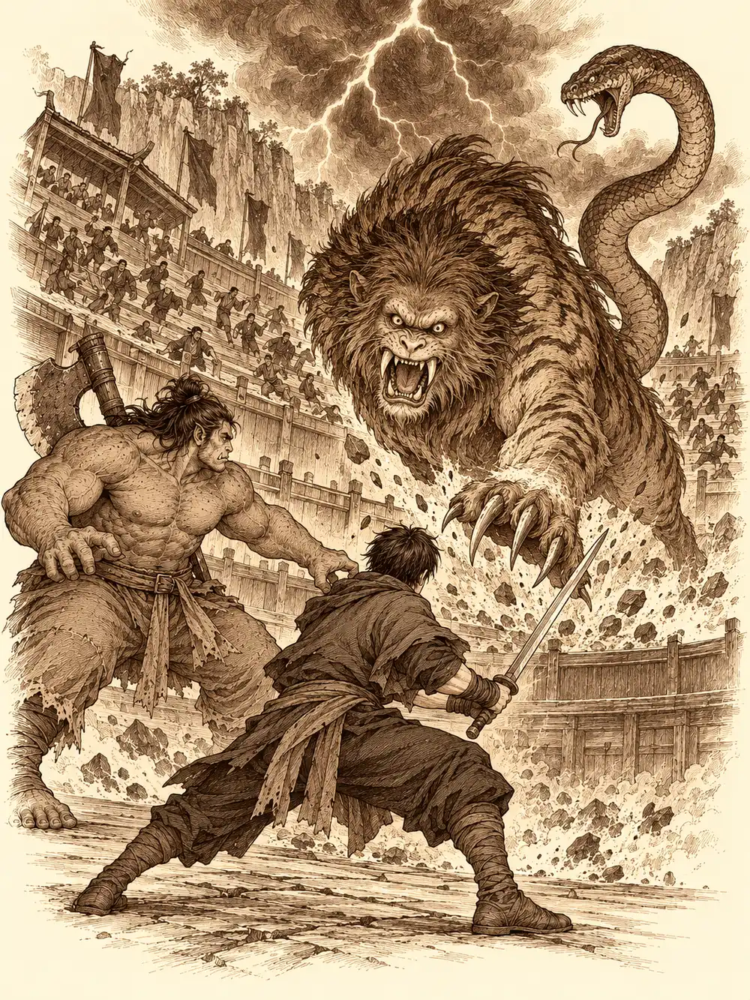

Capítulo 106
El tercer torneo de Sho
Libro VII · La Reina Cuervo
Jin tenía la mesa cubierta de tarjetitas de papel. En cada una había dibujado con mucho cuidado el nombre de su gimnasio, la promesa de una apertura próxima y un descuento de la mitad para los primeros que se apuntaran. El local estaba casi listo. Le faltaban instructores, y pensaba repartir aquellas tarjetas entre el público del torneo, que ese año sería gratis: el shogunato lo había organizado para que la gente olvidara un rato la crisis, que se notaba en cada puesto del mercado y en cada plato.
Gur intentaba descifrar unos papeles que le había dado Corco, escritos en orco, con la frente arrugada como un melón. Reconocía palabras sueltas. Chamán. Fuerte. Unión. Había ayudado al herrero de Ukio con sus armas y había pagado de más para que pudiera atender a los vecinos pobres, y llevaba días esperando el torneo como un niño espera una fiesta. Palayer había llegado del campamento del Sur con la capa todavía húmeda; allí no había encontrado acción y se había dedicado a entrenar y a comer mal.
Banzo entró con cuatro cajas apiladas que se le escurrían de las manos. Les contó por encima que había salido con Ikari a buscar pistas del ataque a Calista y que entre unos arbustos habían encontrado una daga que parecía de ella; la tenía guardada. Después le pidió a Shizuka que fuera repartiendo las cajas.
"Abrid las vuestras a la vez".
Dentro había batas de tela suave, de las que en su tierra se ponían los luchadores para entrar en el combate. En la espalda llevaban el símbolo de los cazadores y el de la tienda de Tsugami, y en la de Gur, además, bordado en grande, el título de campeón de Ukio. Gur la levantó en el aire.
"Me ha regalado una bata para dormir".
"Es para que entremos todos juntos. Como un equipo".
Banzo se puso la suya y empezó a dar puñetazos al aire, encogido, a saltitos, con la capucha sobre la frente. Palayer se la echó por encima de la armadura y dio una vuelta para que la vieran. Jin cogió aguja e hilo y le cosió por dentro un parche de su gimnasio, debajo del logotipo de la costurera, que se iba a enfadar. Gur se miraba la suya con cierta decepción. Quería pegarse con gente fuerte, no con bichos.
"Pues pateemos a esos bichos", le dijo Banzo, "y luego nos pateamos nosotros".
Shizuka no podía participar. Le habían dicho que era demasiado pequeña.
"Yo creo que es para proteger a los bichos de ti", le dijo Gur.
La arena estaba en las afueras de la capital: un gran círculo de tierra con rocas, una charca y algo de barro, rodeado de gradas. Las calles, que llevaban toda la semana vacías porque nadie tenía dinero para salir, se habían llenado. Había vecinos, tenderos a los que conocían de Sho, cazadores de Ukio, nobles en las gradas del norte. Tsugami gritaba el nombre de su tienda cada vez que alguien miraba hacia ella. Bajo un toldo estaba Rua, y a su lado el shogun, encogido y pálido, que había querido dejarse ver para que el pueblo supiera que seguía vivo.
Sota, el presentador, se les acercó con prisa y cara de no querer explicar nada.
"Siempre novatos. Nadie lee las cartas".
Lo explicó de todos modos. Los cazadores y la gente de palacio llevaban tiempo capturando yokai para el torneo. Saldrían en oleadas, sin descanso, y el que quedara inconsciente estaba fuera. Banzo, mirando las gradas, se acordó de su prueba de adultez en la tribu. Gur levantó los brazos y la grada coreó su nombre. Se quitaron las batas, alguna acabó volando hacia el público y empezaron los tambores.
Los primeros fueron oni. Banzo le clavó el arpón a uno y tiró de la cadena, y el oni clavó los pies en el suelo, agarró la cadena por su lado y fue él quien lo arrastró. Otro apareció de la nada junto a Jin y Gur y les echó encima un aliento gélido que les heló la sangre en las venas. Palayer cargó contra él con la luz de su diosa. Un tercero le susurró a Gur que su sitio estaba con los grandes como él, con él y sus amigos; Gur se sacudió la voz de la cabeza como quien se sacude una mosca.
En mitad de aquello Banzo y Gur se miraron y se entendieron sin hablar: el semiorco entrelazó las manos, el goliat apoyó el pie y salió volando para caer sobre su enemigo con todo el peso de su cuerpo. Al último, un oni que se escondía en una nube de oscuridad, lo persiguieron Jin y Palayer hasta sacarlo de su escondite, y Gur terminó con él. La grada rugió. No hubo tiempo de respirar.
"A ver, pequeño aprendiz, cómo te las has arreglado estos días".
Kuma asomó por detrás de unas rocas. Le llegaba a Banzo por el tobillo. Le dio un mordisco, dos zarpazos, y empezó a crecer con cada golpe que le devolvían. Jin descubrió pronto que su fuego no le hacía nada y cambió al frío. La luz de Palayer sí le arrancaba gritos. Gur, en cambio, no acertaba ni una, y cada fallo lo ponía de peor humor.
"Yo quiero un combate singular contra ti", le gritó a su maestro. "No con esta gente".
"Tú contra mí no puedes. Ya te gané la última vez".
Banzo intentó que el maestro se fijara en él para dejarle sitio a Gur, pero los demás seguían necesitando pelear para no caer. Al final fue el goliat quien le aplastó un dedo. Kuma saltó a la pata coja, gimoteando.
"Vale, vale, vale, paro. Os habéis vuelto muy fuertes".
Se fue de la arena dando saltos de gigante, vivo y dolorido. Gur se quedó plantado con los brazos colgando, enfurruñado como un niño al que le han quitado el juguete.
Sobre la arena se formaron nubes negras. Empezaron a caer rayos.
Lo que saltó entre las rocas no estaba en el programa. Tenía cuerpo de tigre, cara de mono y, en lugar de cola, una serpiente que se retorcía por su cuenta. Rugió, y el rugido les dolió dentro de la cabeza. En las gradas empezaron los gritos. La gente huía tropezando por los escalones. Los guardias formaron un círculo de lanzas alrededor del shogun, y Rua, por encima de los escudos, les pidió ayuda a los cazadores.
El nue mordió a Jin y el veneno le entró en la sangre como un mareo frío. Después repartió zarpazos, dentelladas y coletazos, y la tormenta volvió a castigarlos con rayos. Palayer pronunció un juramento contra aquella criatura, el voto de su diosa frente a lo que no debía existir, y desde entonces cada golpe suyo encontraba carne. Banzo y Gur no le dejaban espacio. Jin apenas podía levantar la espada; el veneno no se le iba. Fue Palayer quien descargó el golpe radiante que lo mató. El cuerpo reventó en una descarga eléctrica que los alcanzó a todos, y Jin cayó al suelo sin sentido.

Palayer le curó. Gur, con un brazo colgando, se plantó en mitad de la arena.
"¡Soy el campeón!".
Las gradas estaban medio vacías y nadie aplaudía. Gur no entendía por qué se iba la gente. Para él lo más peligroso había sido también lo más divertido. Quiso arrancarle un colmillo al nue para hacerse un collar y el cadáver le soltó otra descarga que lo tumbó. Se levantó porque lo estaba mirando mucha gente.
"¿Cómo ha podido entrar esto aquí?", preguntaba Banzo. Nadie le respondía.
Los guardias saltaron las vallas y rodearon el cuerpo. Detrás de ellos entraron monjes y especialistas del shogunato que lo examinaron sin tocarlo. Gur agarró a uno de los guardias por la armadura y le exigió dos dientes para él y para su colega Banzo; el guardia lo apartó con un empujón, porque acababan de asaltar la capital. Escoltaron a Rua y al shogun hacia el castillo. El shogun tosía. Rua, al pasar, levantó un poco la cabeza y los saludó con la mano.
Sota se acercó despacio, con la cara del que ya está calculando lo que va a costar aquello.
"No esperábamos esto. Teníamos otras criaturas preparadas". Suspiró. "Hay que cancelar el evento. La gente va a estar furiosa. Y las arcas, uf".
Para calmar los ánimos les concedía el título. Ya lo anunciarían cuando las cosas se aquietaran: que los participantes del torneo habían defendido al shogunato de un ataque. Abrió una caja y les colgó a cada uno un collar de campeón de Sho. Después repartió lo que tenía. A Jin le dio una capa que protegía a quien la llevara. A Palayer, un mayal de dos cabezas que, en las manos adecuadas, se encendía con la luz de la luna; lo habían preparado para una combatiente que no había vuelto. A Banzo le tendió un arma de asta enorme, de hoja ancha y curva.
"Era de un soldado del shogun que se preocupaba por todo el mundo. Se llama El mejor amigo".
Le contó que el arma le endurecía la defensa y que, en plena furia, le permitía gritar a sus enemigos de tal manera que no pudieran evitar ir a por él. A Gur le entregó un martillo de dos manos tan grande que Sota no consiguió levantarlo del suelo. Se llamaba Rompehuesos. El que lo llevaba antes aplastaba cráneos con él, y en un buen golpe tumbaba a cualquiera.
Gur se emocionó tanto que levantó la mano para celebrarlo y del anillo le salió una bola de fuego. Le gritaron que no apuntara al vendedor, que lo mataría. Apuntó al puesto. El tenderete de comida de Ushi saltó por los aires con toda la mercancía, y Ushi se quedó apagando las llamas sin hacerle caso a nadie.
Palayer apoyó un pie en el pecho de Gur y le colocó el brazo dislocado de un tirón. Gur le dio las gracias y después se volvió hacia Banzo con el mandoble ensangrentado con el que había ganado todos sus combates.
"Toma. Es un regalo. Esto me hizo campeón, y ahora con el martillo me defiendo mejor".
Banzo intentó levantarse para abrazarlo y se cayó de rodillas. Probó la espada con unos cuantos movimientos.
"Me tienes que ganar en el próximo torneo para ser el campeón".
"No te lo pienso poner fácil".
Volvieron a la base por calles llenas de guardias. Registraban portales, preguntaban, miraban hacia los tejados. En las esquinas la gente hablaba del bicho gigante del torneo y de que casi matan al shogun. Shizuka los esperaba sentada en la puerta, a salvo; la habían echado de las gradas cuando empezó el lío.
Gur le enseñó los dos collares. Al juntarlos descubrió que encajaban, que eran dos medias lunas que hacían una entera.
"Claro", dijo la niña, "cuando eres el campeón de un sitio y el campeón de otro, eres el campeón".
Le dio unos golpecitos en la cabeza.
"Muy bien, Gur. Ahora descansa".
Le dio en la frente y Gur cayó de espaldas con los brazos en cruz y una sonrisa enorme, completamente dormido. Banzo, con la cabeza sobre la mesa, levantó un pulgar, y la niña lo tumbó también. Jin se fue a su cuarto antes de que la niña se girara hacia él. Palayer ya se había escabullido. Shizuka se acostó encima de los dos bárbaros como sobre un colchón de piedra.
Al día siguiente, Banzo soñó que ensillaba un grifo y despertó con dos mujina lamiéndole la cara y una patada de Shizuka en las costillas. Gur seguía durmiendo. Banzo le pintó unas gafas con un lápiz de carbón, se pintó también él y le dejó el lápiz a la niña en la mano. Shizuka, al despertarse, añadió más dibujos y le pasó el lápiz a Gur antes de irse muerta de risa.
Corco entró furioso porque nadie le había avisado del torneo. Gur le enseñó el martillo nuevo con la cara pintarrajeada y la bata puesta, y el viejo lo tomó por un impostor y levantó el pico para atacarlo. Hasta que Gur no le mostró los papeles que él mismo le había dado no empezó a reconocerlo. Gur le confesó que entendía el orco que hablaba su padre, pero no el escrito. Corco le explicó entonces su idea de una horda: un líder fuerte, guerreros, recolectores y cuidadores, cada uno a lo suyo, y una aldea levantada por sus miembros. A Gur le pareció enorme. No quería obligar a nadie a seguirlo ni echar a nadie de su casa para quedarse con ella; quería que también hubiera aliados que no fueran orcos, y pensaba pedirle ayuda a la shogun cuando pudiera. Se fue al lago después de pedirle al viejo minerales para el herrero. Corco se quedó dudando de cuánto había entendido, y solo entonces se acordó de que había venido a echarle la bronca por lo del torneo.
En Ukio, Sun volvió con números y listas del Monte de los Melocotoneros. Mientras atendía al bebé con el inugami, le explicó que su tierra daba frutos, madera y cosechas en abundancia y muy deprisa. Según la tradición que le habían contado de niño, la isla había nacido de la unión de espíritus. El consejo de las bestias le había dado permiso para ofrecer al shogunato lo que les sobraba y aliviar un poco la crisis de los pueblos.
El inugami se alarmó. Una isla tan cerca, con gobierno propio, que la capital apenas conocía. Le advirtió de que podían acusarlo de esconder recursos, y de que además las cuentas no cuadraban. Sun insistió en ayudar aunque fuera arriesgado y le pidió ayuda con los números. El inugami se negó: estaba ocupado con los portales, y le aconsejó que se concentrara en reparar la bendición y en seguir el camino de Tang.
El mono acabó brindando con té junto a un tanuki. Rechazó el sake.